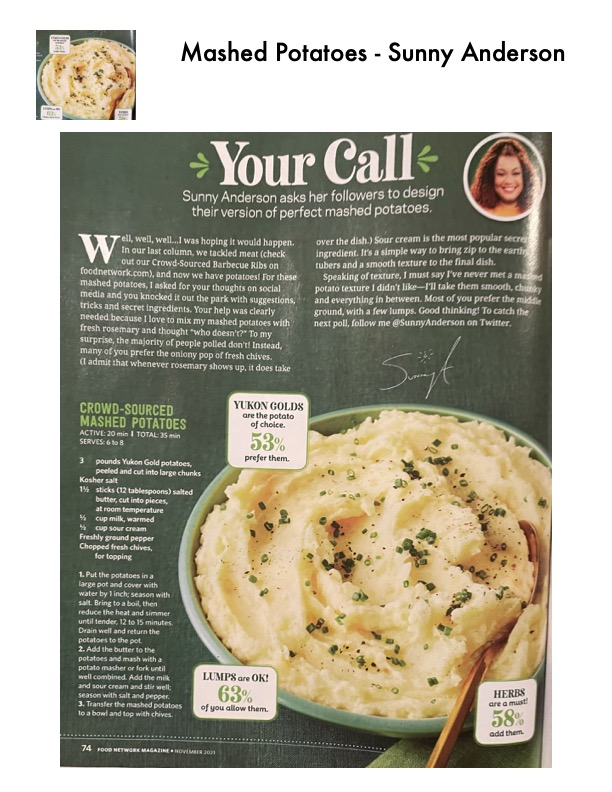

Crowd-Sourced Mashed Potatoes

Original cookbook page 253
Creamy mashed potatoes by Sunny Anderson featuring Yukon Gold potatoes, butter, sour cream, and fresh chives.
Prep: 20 minutes • Cook: 15 minutes • Total: 35 minutes
Ingredients
- 3 pounds Yukon Gold potatoes, peeled and cut into large chunks
- Kosher salt
- 1½ sticks (12 tablespoons) salted butter, cut into pieces, at room temperature
- ½ cup milk, warmed
- ½ cup sour cream
- Freshly ground pepper
- Chopped fresh chives, for topping
Instructions
- Put the potatoes in a large pot and cover with water by 1 inch; season with salt. Bring to a boil, then reduce the heat and simmer until tender, 12 to 15 minutes. Drain well and return the potatoes to the pot.
- Add the butter to the potatoes and mash with a potato masher or fork until well combined. Add the milk and sour cream and stir well; season with salt and pepper.
- Transfer the mashed potatoes to a bowl and top with chives.
📝 Recipe Notes
By Sunny Anderson. From Food Network Magazine, November 2017, page 74. Using Yukon Gold potatoes gives the best creamy texture.
Recipe #253 from collection